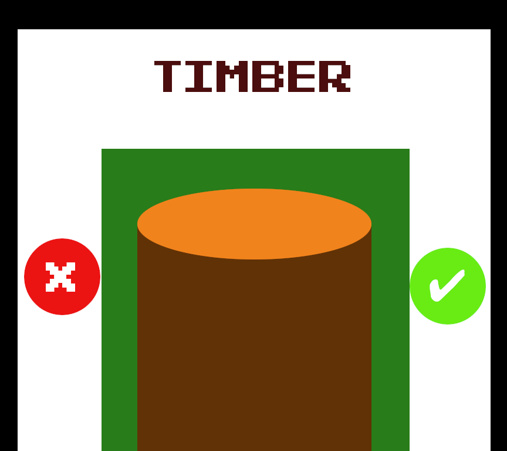

Who am I?

I’m Chatchawan L Suwaratana.
I’m an aspiring web developer from Austin, Texas. I’m currently making small video games and web apps
that I find fun. My passion is to imbue a sense of whimsy into everything I create.
What am I doing?

I'm learning how to create custom VRChat avatars in Blender, and plan on providing comissions when my skills are sufficient.
Many people prefer a personal presence in VRChat, and the desire is not unique to that platform. In an age of social
distancing, we may see VR environments being the norm for social hangouts. Personalised and even reality-mimicing avatars could
soon be in great demand.
Services I would offer may include:
- Full custom avatars, sculpting, modeling, rigging, topography
- Avatar changes, fixes
- Animation
- Prop modeling
- Visual effects
Timber App

Here's an example of an app I could create when I'm done with my training!
The user chooses certain types of wood in much the same style as the dating app Tinder, but instead of never seeing these
pieces of wood, a monthly subscription box is sent with tools and blueprints to make DIY projects!
This app would be for those who like to choose their projects based on the look of the wood alone. This can spark creativity
in ways never seen before!